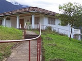

Useful Tips &
Welcome to Our Residence I
Most information also applies to the Residence II in town
Greetings and Blessings to Our Volunteers
The Residence is a home for volunteers who want to serve the people of this area. We hope that God will grant you peace and rest while under our roof. May this house be your second home. May those you love be near you in your thoughts and dreams. Even though you might be with us only for a short time, we hope you will be as comfortable and happy as if you were in your own home. May you prosper in your profession and in your personal life. May every person that you meet while you are here add to your joy. When you leave, may your journey be safe. We are all travelers; from “birth till death”, we travel between the eternities. May these days be pleasant for you, profitable for others, helpful for those you meet, and joyful to those who know and love you best.
In and Around the House
Weekday Meals
- Lunch is served at noon and dinner at 6 pm in the dining hall of the Convent. Please be punctual for the sake of the sisters, who have to catch afternoon buses for their pastoral work in other villages.
- The Clinic closes for lunch hour. Patients do not expect you to work overtime; they are grateful for your service and don’t mind waiting their turn.
- Let the Mother Superior know a day in advance if possible if you will be missing a meal.
- Please make an attempt to speak Spanish and interact with the sisters and other non-clinic persons during mealtimes. It is an opportunity to socialize and learn local traditions and culture. There is communal dish washing after each meal.
- Out of respect to the Sisters and other local staff, we ask that you please dress conservatively in the Mission. No short shorts, tank tops or beach clothes in the dining hall. In general, dress is more conservative than in Europe or the US. Please be considerate.
Breakfast and Weekend Meals
- Volunteers prepare their own breakfasts in the Residence kitchen.
- Those who remain in Guadalupe on weekends use the Residence kitchen, and often cook and share meals together.
- A list of basics provided by the Convent is posted in the Residence kitchen. Please give Amanda the group shopping list on Wednesdays as shopping day in Loja is Thursday.
- For special items at your own expense, there are small shops in the village and a large Sunday market in Zamora.
Kitchen: Dishes, Trash, Bottles...
- Each person is responsible for washing and putting away their own dishes and keeping the kitchen counters clean. Please don’t leave unwashed dishes or utensils in the sink.
- Please separate biodegradable, burnable and glass/non-burnable waste in the designated trash containers.
- Burn your own and kitchen burnable trash in the oven located between the Clinic and the Residence. Ask where to put the biodegradable trash.
- If you buy beer in town, return the empty bottles to the same store where you bought them. The stores need the empties to order more.
Water System, Water Pump and Drinking Water
- The Residence is connected to the public drinking water system and it works fine most of the time. But not always!
- Tap water is safe for cooking, showering, etc., but to be 100% safe we provide drinking water in large bottles. The empty bottles need to be brought to the Convent in order to be replaced.
- There is a small reserve tank in the attic for use only when the water pressure is low. When multiple people are showering at the same time you have to turn on the water pump; the switch is located on the wall at the door of the kitchen pantry.
- IMPORTANT: The water pump can overheat and cause toxic smoke! Never leave it turned on when you leave the house. Do not use it at night because it is noisy. When there is no more water in the reserve tank, the water pump will not provide more water! The water pump is only to increase the water pressure.
- Do not use the washing machine when the water pressure is low. If you have doubts, please ask the “oldies” of the house.
Security
- It is MOST IMPORTANT that all volunteers make sure that the front door “clicks” closed when entering and leaving the Residence. For your own sake and the safety of others, please collaborate!
- Please do not prop open the downstairs door while doing laundry. It must also be locked at all times.
- The same thing applies to the door of the verandah: that door must be kept closed when no one is in the house.
- No one is allowed in the Residence unless they belong to the staff of the Clinic. Please respect this important rule!
- Keep your bedroom door locked at all times.
- Do not leave keys or valuables visible, or a table under an open window, to prevent “long fingers” from pilfering.
- Also due to heavy and windy rainstorms we recommend to have nothing under an open window because it would get really wet.
- Each bedroom is equipped with a metal safety box for your valuables. In order to put in your personal code, first push the red button in the back of the open door, then enter a number (3 to8 digits) followed by either A or B. Close the door. In order to open it, enter your number followed by A or B. If you have trouble, P. Jorge has a master key to open any box.
- Do not go hiking alone in remote areas. Please let someone in the Mission know your plans so we can find you if you are missing. There is no search and rescue helicopter service and the nearest hospital is an hour away!
- Most dogs you may encounter belong to locals and are docile, but use common sense. If a dog appears aggressive, picking up a stick or stone will usually send him on his way.
Mosquitoes and Other Creatures
- You can leave the windows open during the day and night. Closing the curtains before dark will keep out most flying insects. There are few or no mosquitoes.
- Sometimes before a heavy rain you might see flying ants around the light bulbs. They are not harmful.
- Kill cockroaches if you see any in the house. There is usually bug spray in the hall closet, or it can be purchased in the village. You also might see the occasional spider, but they are usually harmless. We have to learn to co-exist with many animals in the rainforest!
- You will probably not see any but there are snakes here, and some are venomous. Watch your step wherever you go. Rubber boots are recommended for hiking, especially in high grass areas.
- Always have a flashlight with you at night.
Sheets and Towels
- Towels, sheets, blankets and pillows are provided, but not laundry service. Please wash your own towels and sheets with the washing machine in each residence.
Lights and Other “Turn-offs”
- Please turn off the inside and verandah lights before you go to bed. Only keep the lights on where you are and turn off others.
- Please turn off the computer completely (not just the monitor).
- If you hear the water pump running, make sure it hasn’t been left on accidentally. (Switch at door of kitchen pantry.)
- Very important is to turn off the gas stove after use! We don’t want the Residence burned down as has almost happened once!
Smoking
- There is absolutely NO SMOKING allowed in the bedrooms or any other areas of the house. You may smoke on the verandah or the front porch, but please use discretion so as not to disturb others.
Bedrooms
- All bedrooms have private baths with hot showers.
Temperature
- Daytime temp’s are usually warm but nights are cool.
Room Cleaning
- If you would like someone to clean your room once a week, let P. Jorge know. Brooms, cleaning supplies and toilet paper are located in the upstairs hall closet.
Rubber boots
- We recommend you wear rubber boots for hiking to protect against snakes. There are several pairs of different sizes in the boot closet downstairs. If they get muddy, please clean them outside behind the building before returning. Do not leave them outside so locals aren’t tempted to “borrow” them.
- Everyone loves to put on clean boots. Please, also wash them well after using them.
Electricity
- 110 Volt, 60 Hertz, with North American outlets (flachpolige Stecker)
- There is a 220 V outlet in the Clinic.
Internet
- For those who don't want to bring their own laptop, we have a desktop computer with internet and the posibility to skype in the residence for your convenience.
- In order to save energy and protect the computer, please turn off BOTH the computer and the monitor after use.
- Laptop users: Ask P. Jorge for the password. We have WIFI in both Residences and in the clinic. Skype is installed on the computer in Residence I.
- Our website: www.guadalupe-ec.org
- Please refrain from large data transfers so as not to slow down the internet access speed for others.
Phone
- International calls cannot be made from the phones in the Residence or the Clinic. Cell phone service is unavailable at the Mission. For international calls there is a public phone in the village, or you can Skype from the Residence computer or your laptop.
- Phone extensions in the Mission
101 Clinica Pharmacia
102 Clinica Enfermeria
103 Clinica Consultorio Doctor
104 Colegio a Distancia/Mission school "Escuela Lorenzo de Cepeda"
105 Residencia Voluntarios I in the Mission
106 Convento Despacho/Parish priest house/Secretaria
107 Convento/Parish priest house/kitchen
108 Convento/Parish priest house/Oficina Padre Jorge
117 Casa de Las Hermanas
118 Casa Parroquial Vieja
119 Casa de Encuentro, Cocina, Zoila
120 Casa de Encuentro, Servidor Internet, Huespedes 2
122 Residence II, Apartamento Familiar del Doctor, 2. Piso
123 Residence II, Apartamento, 3. Piso
124 Residence II, Apartamento Amanda Anderson
- Calling the Mission from outside or from your home, please see Our Contacts...
In and around the Clinic
- After you arrive, please give a copy of your professional license to P. Jorge or to Amanda, needed for the Department of Health in Zamora.
- A cooperative, congenial attitude when working with our staff and the other volunteers is extremely important for the ongoing success of our Mission Clinic.
- Clinic hours are from 8 am to 5 pm, with a one-hour lunch break at noon. If there are no more patients in the afternoon, we fully understand that volunteers may occasionally want to go for a walk or visit the town, but please tell the clinic staff before you leave (Amanda or Mariana). It is however appreciated if you would remain on stand-by in the Residence in case more patients should come in the afternoon.
- Please keep in mind that the Clinic staff have families at home and their workday ends at 5 pm, so we ask you to finish your work so they can leave on time. We can best serve others and avoid “burn out” by setting boundaries for ourselves, such as sticking to a regular schedule. Please advise Amanda and Mariana each morning how many patients you feel you can see so that you don’t have to work past 5:00 pm. We understand there are exceptions but this is our norm.
- We appreciate your wearing scrubs as Clinic clothing so that you are recognizable as a doctor, dentist or nurse to the patients. But before each meal at the sisters house we aks you to change into your personal clothing.
- In all Clinic matters Amanda Anderson is the Coordinator and the authority and we thank you for collaborating well with her. In special cases P. Jorge Nigsch, Director of the Clinic, is also ready to help to solve whatever problem might arise.
- For the dentists it is important to know that we have to be super careful within the community of other dentists of the Province, so as not to be viewed as in competition with them. For that reason, it is strictly forbidden for the dental volunteers to provide any services for patients independent of the Clinic.
- We welcome volunteers of all faiths to work in our Catholic Mission Clinic. We understand that you may not agree with all Catholic values, but we ask you to kindly respect them while you are here. The Catholic ethic respects life from its conception and therefore we ask you to neither practice nor encourage abortion. You are also in Ecuador where abortion is illegal.
- Primary health care volunteers are encouraged to educate our patients about the Billings Method of natural family planning. This affordable birth control method places the responsibility on both the husband and the wife, and encourages communication between them. Copies of the Billings Metod are available in the Clinic.
In and around town
Religious services
- Regardless of your personal beliefs, you are invited to participate in any or all of the religious services of the parish here in Guadalupe or in the other villages (barrios).
- Sunday mass is always at 11:30 a.m. in the parish church. It is appreciated if you would attend at least the first Sunday mass you are here so we can introduce you.
- Religion and community life here are far more interwoven than you might imagine. Attendance at religious services creates confidence in you and advertises your presence as a volunteer health provider.
Transportation
- Getting around by bus is easy and inexpensive. The local bus schedule is posted in the Residence and the Clinic. Just remember the “Ecuadorian clock.” Buses may come up to an hour early or late!
- If you would like P. Jorge to arrange your domestic return flight to Quito or Guayaquil, remind him at the beginning of your stay.
Entering into a new culture
- Most people in town are friendly and welcoming. They like to get to know and interact with the volunteers. Please greet everyone even though you don’t know them; they will feel rejected if you don’t.
- Sharing in sports like basketball or volleyball is an excellent way to become part of the community.
- There are several stores in town. Try all of them, not just the same one.
- On weekends you may want to try the local food such as guinea pig or frogs in Guadalupe or in the neighboring village of Piuntza.
- Some villagers may offer to show you around, have you experience their way of life and the kind of work they do. They share this with generosity but a tip is very welcomed.
- As was said earlier, we discourage volunteers from inviting local people into the Residence, except for special occasions approved by P. Jorge.
- It is courteous to ask permission before taking photographs of local people, both within and outside the Clinic setting.
If you have suggestions, problems or criticisms, please don’t hesitate to contact P. Jorge!
E-mail: padre.jorge.nigsch@guadalupe-ec.org